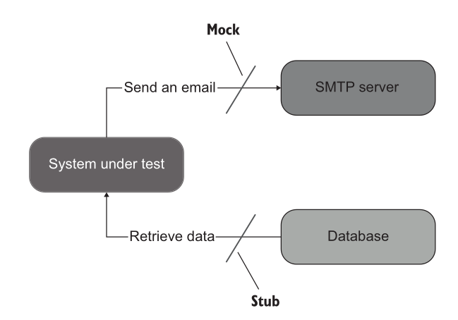
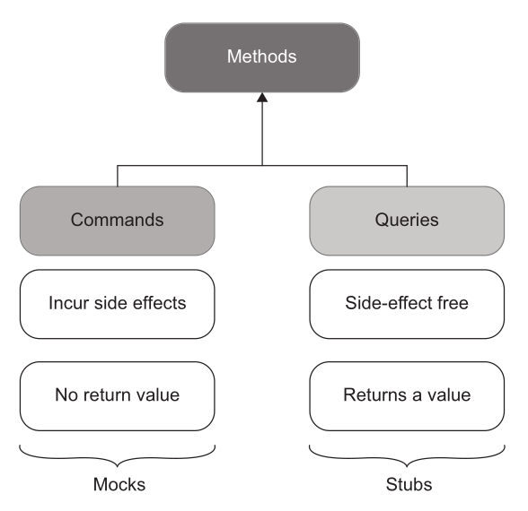
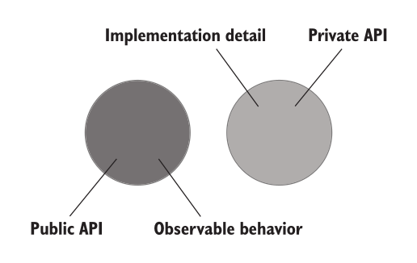
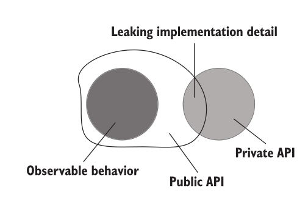
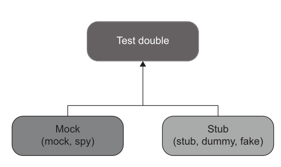

Testing with external dependencies: test doubles, mocks vs stubs
Quick recap
- Attributes of a good unit test
- Protection against regressions
- Resistance to refactoring
- Fast feedback
- Maintainability
Agenda
- Testing with external dependencies
Challenges with external dependencies
When your code depends on external systems (databases, third-party APIs, file systems, message queues, etc.), you face a few challenges:
- External systems can be slow.
- They can be unreliable or rate-limited.
- They can make tests hard to reproduce.
- They can add setup/teardown complexity.
Strategies for Testing Code with External Dependencies
- Abstraction via Interfaces
- Test Doubles for Third-Party APIs
- Using Mocks and Stubs
Abstraction via Interfaces
- Wrap external services behind an interface or adapter.
- Your main code talks only to the interface, not directly to the external system.
- During testing, you substitute the real dependency with a fake, stub, or mock.
Refer example here
Key idea: Order doesn't need to know which concrete warehouse or mail system it is talking to. It only depends on an interface. Tests can then provide tiny, purpose-built implementations of those interfaces.
┌──────────────┐
│ Order │
└──────┬───────┘
│
depends on interfaces
┌─────┴─────----┐
│ │
Warehouse MailService
│ │
┌───────┴───┐ ┌───┴────────┐
│ │ │ │
RealWarehouse ... RealMail ...
Test Doubles for Third-Party APIs
- Use libraries like WireMock (Java), httpretty (Python), or responses (Python) to simulate API servers.
- You predefine responses for certain requests, so tests don’t hit the real API.
Mocks and Stubs
- Mocks help to emulate and examine outcoming interactions. These interactions are calls the SUT makes to its dependencies to change their state.
- Stubs help to emulate incoming interactions. These interactions are calls the SUT makes to its dependencies to get input data.

💬 Which one is the mock?
The whole arrange block of order_test.cpp. Three dependencies, one macro, three
times:
MockWarehouse warehouse;
auto mailService = std::make_shared<MockMailService>();
Order order(50, "Talisker");
order.setMailService(mailService);
EXPECT_CALL(warehouse, hasInventory(50, "Talisker")) // (a)
.Times(1)
.WillOnce(Return(true));
EXPECT_CALL(warehouse, remove(50, "Talisker")) // (b)
.Times(1);
EXPECT_CALL(*mailService, send(_)) // (c)
.Times(1);
order.fill(warehouse);
ASSERT_TRUE(order.isFilled());
Which of (a), (b), © are stubs, and which are mocks?
Answer
(a) is a stub. WillOnce(Return(true)) hands the SUT a value it needs in
order to proceed at all. Incoming interaction. Nothing about the warehouse is
being verified here — the test would say the same thing written as
ON_CALL(...).WillByDefault(Return(true)) on a NiceMock, which is gMock's
actual stubbing form. Written as EXPECT_CALL, it quietly adds a verification
nobody asked for.
(b) and © are mocks. Neither returns anything. Both exist so the test can
assert the call happened: stock left the warehouse, mail went out. Outgoing
interactions — and the EXPECT_CALL is the assertion, which is why nothing
after // ACT mentions them.
The direction of the interaction decides the name, not the macro you typed. One library, one syntax, two different jobs. "We use gMock" therefore tells you nothing about whether a test is over-mocked.
gMock in one slide
Declare the double once. Each MOCK_METHOD generates an override that records and
answers:
class MockWarehouse : public Warehouse {
public:
MOCK_METHOD(bool, hasInventory, (int, std::string), (override));
MOCK_METHOD(void, remove, (int, std::string), (override));
};
Then arrange it. Which macro you reach for is the whole decision:
| Syntax | Means | Verifies anything? |
|---|---|---|
ON_CALL(w, hasInventory(50, "T")).WillByDefault(Return(true)) |
when asked, answer true |
no — stubbing only |
EXPECT_CALL(w, remove(50, "T")).Times(1) |
this call must happen, exactly once | yes |
EXPECT_CALL(w, remove(_, _)).Times(0) |
this call must never happen | yes |
EXPECT_CALL(*mail, send(HasSubstr("cannot"))) |
must be called with a matching argument | yes |
NiceMock<MockWarehouse> w; |
stop warning about calls you did not arrange | no |
_matches any argument;Eq,Ge,HasSubstrmatch part of one.WillOnce(Return(x))answers once,WillRepeatedly(Return(x))answers every time.
ON_CALLsupplies input.EXPECT_CALLmakes an assertion. UsingEXPECT_CALLwhen you only needed an answer is the most common way a test ends up pinned to the implementation rather than the behaviour.
Commands vs queries
- Commands are methods that produce side effects and don’t return any value (return void).
-
Examples of side effects include mutating an object’s state, changing a file in the file system, and so on.
-
Queries are side-effect free and return a value.

The rule is easy to break
An earlier version of Order::fill, in this course's own example:
bool fill(Warehouse&); // removes stock, sends mail — and returns a value
It changes state and answers a question, so it belongs to both columns at once. The
return value was redundant as well: isFilled() already exposed the same fact, and every
test asserted it twice.
void fill(Warehouse&); // command
bool isFilled() const; // query
A method that is both is a method you cannot decide how to double.
Commands and queries in a real code base
Same repo as the test-double examples later in this lecture.
Command — record_gemini_failure. Returns
None, writes two module globals. Nothing to read back:
def record_gemini_failure() -> None:
global _gemini_healthy, _gemini_last_check
_gemini_healthy = False
_gemini_last_check = time.time()
Query — compute_free_slots. Busy
rows in, free "HH:MM-HH:MM" gaps out. No database, no globals, inputs untouched. Call it
a thousand times and nothing in the system moves.
The same repo breaks the rule twice
is_gemini_available is named like a query, typed
-> bool, and documented as "Returns True if Gemini is currently considered reachable":
def is_gemini_available() -> bool:
global _gemini_healthy, _gemini_last_check
if not _gemini_healthy:
if time.time() - _gemini_last_check < _GEMINI_COOLDOWN:
return False
_gemini_healthy = True # the query writes
return True
Asking the question changes the answer. Once the cooldown expires, the first call
flips the flag back to healthy. chat.py calls it
three times in one request path, so calls two and three see a system the first call
altered.
And once harmlessly
fetch_all_faculty_context also assigns a
global from inside a query — it memoises the formatted block it just built.
clear_faculty_cache is the command that
resets it.
| Query | Writes global | Can a caller tell? |
|---|---|---|
compute_free_slots |
no | — |
fetch_all_faculty_context |
yes, a cache | no — same answer either way |
is_gemini_available |
yes, the flag it reports on | yes |
The rule is not "a query must not write". It is "a query must not change the answer anyone gets next." A cache is invisible. A state machine is not.
The middle row is why Order::fill returning bool mattered: not because returning a
value is forbidden, but because it made one method answerable in two ways that could
drift apart.
💬 Stub it or mock it?
Six methods from the warehouse example. For each one: command or query — and in a test, would you stub it or mock it?
hasInventory · getInventory · remove · send · fill · isFilled
Answer
| Method | Kind | In a test |
|---|---|---|
Warehouse::hasInventory |
query | stub — hand it the answer the test needs |
Warehouse::getInventory |
query | stub, or assert on it for state |
Warehouse::remove |
command | mock — assert the call happened |
MailService::send |
command | mock / spy |
Order::fill |
command | the operation under test |
Order::isFilled |
query | what you assert on |
Query → stub. Command → mock. One rule, nothing to memorise — and it only works while every method is one or the other.
Code separation
- All production code can be categorized along two dimensions:
- Public API vs. private API (where API means application programming interface)
- Observable behavior vs. implementation details
Public vs private API
Usually differentiated by public methods of a class vs private, protected members
Observable behaviour vs implementation detail
- For a piece of code to be part of the system’s observable behavior, it has to do one of the following things:
- Expose an operation that helps the client achieve one of its goals. An operation is a method that performs a calculation or incurs a side effect or both.
- Expose a state that helps the client achieve one of its goals. State is the current condition of the system.
- Any code that does neither of these two things is an implementation detail.
💬 Public, but is it observable?
A User class exposes two public members: a Name property, and a
NormalizeName(string) method. The client's goal is to rename a user.
Which of the two is observable behaviour?
Answer
Only Name. Renaming is the goal; normalising is a step inside it.
NormalizeName neither completes an operation the client wants nor exposes state
the client needs, so by the rule above it is an implementation detail.
Public and an implementation detail is exactly what a leak is. The client is now obliged to call it, in the right order, before every write — and any test written against it breaks the moment normalisation moves elsewhere.
Well designed API

Leaky API design

example leaky design
public class User
{
public string Name { get; set; }
public string NormalizeName(string name){
string result = (name ?? "").Trim();
if (result.Length > 50){
return result.Substring(0, 50);
}
return result;
}
}
public class UserController{
public void RenameUser(int userId, string newName){
User user = GetUserFromDatabase(userId);
//string normalizedName = user.NormalizeName(newName);
user.Name = normalizedName;
SaveUserToDatabase(user);
}
}
Types of test double
- Dummy objects are passed around but never actually used. Usually they are just used to fill parameter lists.
- Fake objects actually have working implementations, but usually take some shortcut which makes them not suitable for production (an in memory database is a good example).
- Stubs provide canned answers to calls made during the test, usually not responding at all to anything outside what's programmed in for the test.
- Spies are mocks that also record some information based on how they were called. One form of this might be an email service that records how many messages it was sent.
- Mocks are the objects pre-programmed with expectations which form a specification of the calls they are expected to receive.

💬 The comments in that file are wrong
order_test_real_objects.cpp labels both of its replacement classes SPY.
WarehouseImpl keeps inventory in an unordered_map. ConsoleMailService appends to
a sentMessages vector.
Are both of them spies?
Answer
One is.
ConsoleMailServiceis a spy. It records how it was called, and the recording is the assertion:EXPECT_EQ("Order filled for Talisker", mailService->sentMessages[0]).WarehouseImplis a fake. It is a working in-memory implementation, not a recorder. The test asserts on final state —EXPECT_EQ(0, warehouse.getInventory(TALISKER))— never on which calls arrived.
A fake has an implementation. A spy has a notebook. Classify by what the test asserts on, not by what the comment claims.
Test doubles in a real code base
Python rather than gMock, but each double is the one named above.
Spy — calendar_calls replaces effective_day with a function that appends to a list before returning a canned answer. The tests then assert on how many times it was called:
test_defaulting_to_today_resolves_the_day_once→ exactly one lookup.test_an_explicit_day_needs_no_calendar_at_all→ zero lookups.
Every effective_day is a database round trip, and these tools once made three of them per answer. The output was correct all three times — only the count was wrong. No assertion on the result could have caught that.
That is a spy in Fowler's sense: a stub that also records how it was called, and the recording is the assertion.
Two classes further down, the identical fixture is a plain stub.
test_venue_with_no_sessions_still_reports_the_substitution requests
calendar_calls, never looks at the list, and asserts on the returned message instead:
msg = asyncio.run(tt.get_venue_schedule("CEP-209", date="2026-08-07"))
assert "Tuesday" in msg
assert "treated as" in msg
Here the canned ("Tuesday", "Friday") only exists to push the code down its
substituted-day path. Same object, two roles.
The double does not decide whether it is a spy. The assertion does.
Stub — no_sessions returns canned empty lists so the code under test takes its empty-result path. Nothing is asserted about the stub itself.
Stub of an external dependency — mock_db hands back a fake cursor whose fetchall() returns whatever rows the test names. It lets test_exact_match_wins_over_longer_substring_match pin a real regression with no database anywhere.
Where over-mocking bites
test_threshold_is_never_set_session_wide
- Loop inside loop inside
if, overMagicMockcall records. - If no recorded call matches
set_config, zero assertions run and the test still passes. - Asserting on interactions rather than state is what makes this possible.
💬 It is green. What has it proved?
That test walks a MagicMock's recorded calls looking for set_config, and asserts
inside the loop. It passes.
What does the pass tell you?
Answer
Nothing. If no recorded call matches set_config, the loop body never runs, no
assertion executes, and the test reports success.
This is CoversEverything from Lecture 7-8 wearing a disguise — production code
runs, nothing is checked. There the assertions were plainly missing. Here they
exist; they are simply unreachable.
A test that can pass without asserting is not a test. Loops and ifs over
mock call records are how that stays hidden.
Worked examples from DAU-buddy, pinned at commit b909c22.
Exercise: three doubles, one behaviour
docs/code/mock_stubs/tests/ holds three files. All three run the same two tests against
the same Order, and all three pass.
| File | How the warehouse is replaced |
|---|---|
order_test_real_objects.cpp |
hand-written classes, used directly |
order_test_manual.cpp |
hand-written double that records calls |
order_test.cpp |
gMock, EXPECT_CALL |
Now refactor Order::fill without changing what it does:
if (warehouse.getInventory(item) >= quantity) { // was: hasInventory(quantity, item)
💬 Name the double in each file. Which suites still pass?
Answer
One passes, two fail.
| File | Doubles | After the refactor |
|---|---|---|
order_test_real_objects.cpp |
fake + spy | passes |
order_test_manual.cpp |
hand-rolled mock | fails — Actual: false / Expected: true |
order_test.cpp |
gMock mock | fails — remove(50, "Talisker") never called |
The fake implements the whole interface, so it does not care which method the SUT
chose. The other two were built around hasInventory specifically: the manual
double hard-codes getInventory to return 0, so the SUT now receives wrong
input, and gMock's EXPECT_CALL pins a call that no longer happens.
Behaviour unchanged, two suites red. That is the second attribute from the recap slide — resistance to refactoring — measured on one page. The gMock suite is not wrong; it is paying for interaction detail this test did not need.
💬 Now your own snake game. What would you test?
Take your Lab 1 implementation. Name three things worth a unit test and three that are not. Then, for each one you would test, decide whether it needs a test double at all.
Answer
No single right list, but there is a shape.
No double needed — pure logic, and the easiest tests you will ever write.
| What | Why it is testable as it stands |
|---|---|
checkSelfCollision() |
body positions in, bool out — a query |
grow(), then length |
command, then query: arrange a body, act, assert the length |
| rejecting a reversal | turning back into yourself is a rule, not a drawing |
| score after eating | arithmetic over state the test controls |
22 of your 36 repos have a checkSelfCollision or checkCollision. Almost none
of them are tested, because the rule is tangled into the render loop where a test
cannot reach it.
Double needed — the world outside the rules. Counted across the 36 repos:
| Dependency | Repos | Double |
|---|---|---|
getch / kbhit — keyboard |
31 / 28 | stub — feed a scripted key sequence |
Sleep / sleep_for — clock |
28 | stub, or your suite takes real seconds |
rand / srand — food placement |
22 / 20 | stub — pin where the next fruit lands |
system("cls") — screen |
18 | spy, if you assert on drawing at all |
| high-score file | 17 | fake — an in-memory store |
If you cannot replace these, you cannot test the game — and that is a design
finding, not a testing problem. A rand() called from the middle of Logic()
has no seam to replace. That is the subject of Lecture 13-14.
Not worth testing.
- The exact characters drawn. Change a border glyph, break a test.
- A getter that exists only so the renderer can diff the last frame against this one. That is the optimisation, not the behaviour.
- That
Setup()ran beforeLogic(). Assert the outcome, not the call order.
Test the rules of the game. Stub the world it runs in. Ignore how it looks.
References
- Chapter 5, Unit Testing, Principles Practices and Patterns by Vladimir Khorikov
- Mocks Aren't Stubs
- gMock for Dummies | GoogleTest
- gMock Cookbook | GoogleTest
- gMock Cheat Sheet